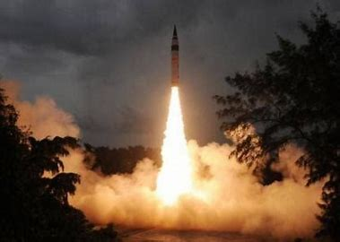
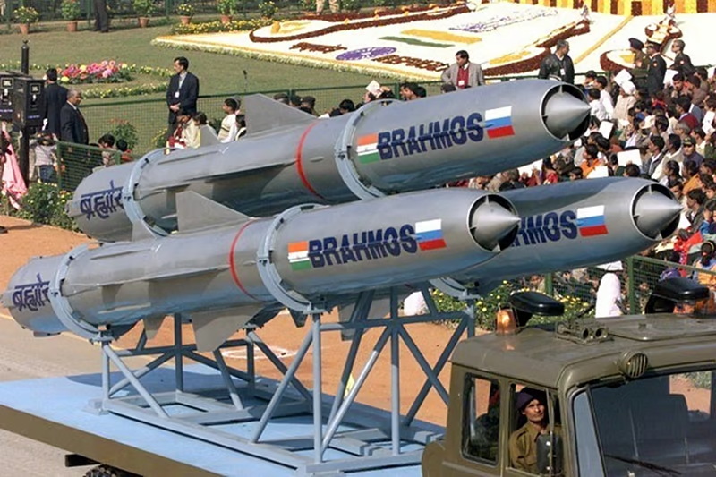
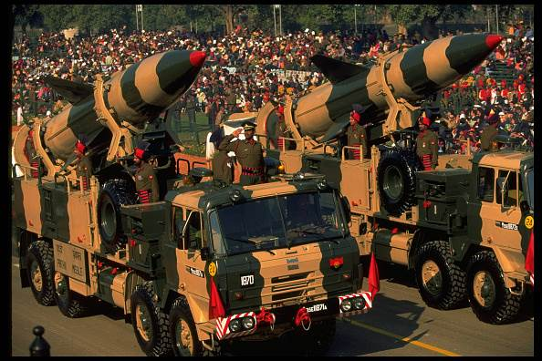
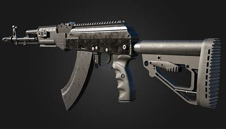
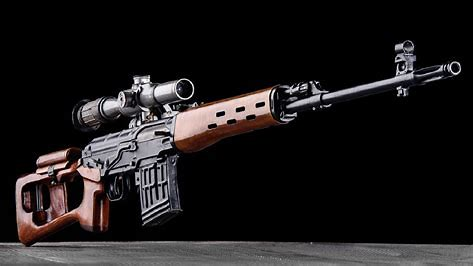
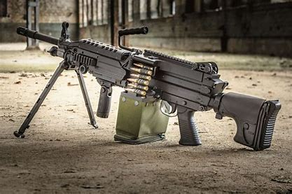

The Indian Army (ISO: Bhāratīya Sēnā) is the land-based branch and largest component of the Indian Armed Forces, making it the world’s second-largest army and the fourth most powerful military globally.[3] The President of India is the Supreme Commander of the Indian Army,[4] and its professional head is the Chief of the Army Staff (COAS). The Indian Army was established on 1 April 1895 alongside the long established presidency armies of the East India Company, which too were absorbed into it in 1903. Some princely states maintained their own armies which formed the Imperial Service Troops which, along with the Indian Army formed the land component of the Armed Forces of the Crown of India, responsible for the defence of the Indian Empire.[5][6] The Imperial Service Troops were merged into the Indian Army after independence. The units and regiments of the Indian Army have diverse histories and have participated in several battles and campaigns around the world, earning many battle and theatre honours before and after Independence.[7]The Indian Army is the land-based branch of the Indian Armed Forces. It protects the nation's borders and keeps peace during wars and disasters.Until the independence of India, the "Indian Army" was a British-commanded force defined as "the force recruited locally and permanently based in India, together with its expatriate British officers"; the "British Army in India" referred to British Army units posted to India for a tour of duty. The "Army of India" meant the combined Indian Army and the British Army in India. It uses modern equipment like tanks, rifles, and missile systems and plays a vital role in rescue operations and national security.
The Indian Army uses a variety of weapons, including assault rifles, machine guns, and sniper rifles for different terrains and missions.
Agni-V (Long-range ballistic missile)
BrahMos (Supersonic cruise missile)
Prithvi-II (Surface-to-surface missile)
The Indian Army uses a variety of weapons, including assault rifles, machine guns, and sniper rifles for different terrains and missions.
AK-203 Assault Rifle
Dragunov Sniper Rifle
Light Machine Gun
